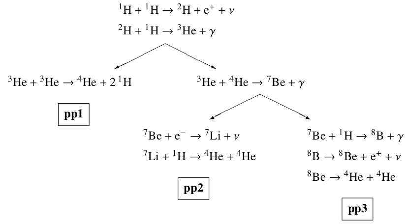

Nuclear processes in stars
Contents
10. Nuclear processes in stars#
10.1. Pen & paper exercises#
10.1.1. The nuclear timescale#
Compute the nuclear timescale \(\tau_{\mathrm{nuc}}\)
for these three reference values of stars masses: \(M_1=1\:M_{\odot}\), \(M_2=10\:M_{\odot}\) and \(M_3=100\:M_{\odot}\). Here above, we called \(\phi\) the efficiency of energy conversion for the fueling nuclear reaction, and \(f_{\mathrm{nuc}}\simeq 0.1\) the fraction of the star’s mass which may serve as nuclear fuel. We are going to calculate this timescale during the Main Sequence (MS), when the nuclear energy is provided by the pp-chain and/or the CNO cycle. The net reaction for hydrogen fusion is:
where \(m_{\mathrm{i}}\) (\(m_{\mathrm{f}}\)) are the atomic masses of the species in the initial (final) stage of the reaction.
-
First compute the efficiency \(\phi\) for hydrogen fusion following the definition above, and bearing in mind the following atomic masses of important isotopes.
element
\(Z\)
\(A\)
\(m/m_u\)
H
1
1
1.007825
1
2
2.014101
He
2
3
3.016029
2
4
4.002603
NB: Remember that \(m_u\) is defined as \(1/12\) times the mass of the \(^{12}\mathrm{C}\) atom. Also, the electron mass is \(m_e=9.109382\times 10^{-28}\:\mathrm{g}\), therefore \(m_{e}/m_u=0.00054854\). You may want to use the useful identity
\[m_u c^2=931.494\:\mathrm{MeV}=0.00149242\:\mathrm{erg}\:.\] -
Secondly, taking into account that for stars at ZAMS the following mass-luminosity relation approximately holds:
\[L_{\mathrm{ZAMS}}\propto M_{\mathrm{ZAMS}}^{3.8}\:,\]compute \(\tau_{\mathrm{nuc}}\) by direct calculation. You will assume that your star will have a constant \(L_{\mathrm{ZAMS}}\) throughout all its MS lifetime.
CAVEAT From detailed calculations, it’s shown that for very high mass stars \(\gtrsim 100\:M_{\odot}\) the ZAMS mass-luminosity relation becomes linear. What is the main implication of this fact? And how does \(\tau_{\mathrm{nuc}}\) change?
10.1.2. Temperature dependence of reaction rates#
We saw in class that the thermally averaged reaction cross-section \(\sigma v\) can be written as
where \(S(E)\) is the astrophysical S-factor and we defined the function \(f(E)\), referred to as Gamow peak, being a very sharply peaked function around an energy value \(E_0\). Also remember that \(b\approx Z_iZ_jA^{1/2}\) with \(A\equiv A_iA_j/(A_j+A_i)\), setting the proportionality of the Gamow factor to the Coulomb barrier and the types of nuclei.
-
Show that the Gamow peak energy \(E_0\) is
\[E_{0}=\left(\dfrac{1}{2}bk_{\mathrm{B}}T\right)^{2/3}\approx (Z_i^2Z_j^2AT^2)^{1/3}\] -
Show that \(f(E_0)\) gives
\[f(E_0)=\exp{\left(-\dfrac{3E_0}{k_{\mathrm{B}}T}\right)}\equiv e^{-\tau}\:,\]where we defined \(\tau\) for future convenience.
Now consider a Gaussian centered in \(E_0\) with width \(\Delta E\):
Since the function \(f(E)\) is sharply peaked around a \(E_0\), we can take this Gaussian as a good approximation of the Gamow peak. Consider the \(f(E)\) expansion to second order around \(E_0\):
-
Show that the width \(\Delta E\) of the Gaussian \(f_{\mathrm{GAUSS}}(E)\) satisfies
\[\Delta E=\left(\dfrac{4}{3}E_0 k_{\mathrm{B}}T\right)^{1/2}\:.\] -
By using the built Gaussian function \(f_{\mathrm{GAUSS}}(E)\), show that you can approximate the thermally averaged cross section \(\left<\sigma v\right>\) in the following manner:
\[\left<\sigma v\right>\approx\dfrac{8}{9}\left(\dfrac{2}{3m}\right)^{1/2}\dfrac{S(E_0)}{b}\tau^2e^{-\tau}\hspace{0.5cm}\Rightarrow\hspace{0.5cm}\left<\sigma v\right>\propto \dfrac{1}{T^{2/3}}\exp{\left(-\dfrac{C}{T^{1/3}}\right)}\:,\]with \(C\) being a number dependent on the Coulomb barrier \(Z_iZ_j\). To do so, remember this tabulated Gaussian integral:
\[\int_{-\infty}^{+\infty}e^{-\alpha x^2}dx=\sqrt{\dfrac{\pi}{\alpha}}\:.\] -
Finally, show that, if you consider a small range of temperatures around some value \(T_0\), you can write
TEMPERATURE DEPENDENCE
\[\left<\sigma v\right>=\left<\sigma v\right>|_{T=T_0}\left(\dfrac{T}{T_{0}}\right)^{\nu}\hspace{0.75cm}\mathrm{with}\hspace{0.5cm}\nu\equiv\dfrac{\partial \log \left<\sigma v\right>}{\partial\log T}=\dfrac{\tau-2}{3}\:,\]
Notice how strong this dependence is on temperature ☝🏻
10.1.3. Energetics of the pp-chains#
Let’s study the \(Q\)-value of the three pp-chains. Remember that the definition of the \(Q\)-value for a nuclear reaction is
\[Q\equiv (m_X+m_a-m_Y-m_b)c^2\hspace{0.75cm}\mathrm{with}\hspace{0.25cm}X+a\rightarrow Y+b\:,\]where we are schematizing a reaction of the nucleus \(X\), of mass \(m_Y\), with a particle \(a\), of mass \(m_a\) which produces a nucleus \(Y\) and a particle \(b\), with masses \(m_Y\) and \(m_b\) respectively. Recalling the scheme of the three pp-chains

you can see that three of the reactions in the chains are accompanied by neutrino emission. The average neutrino energy \(\left<E_{\nu}\right>\) is different in each chain:
-
\(^1\mathrm{H}+^1\mathrm{H}\rightarrow ^2\mathrm{H}+e^++\nu\hspace{1cm}\) gives \(\left<E_{\nu}\right>=0.265\:\mathrm{MeV}\)
-
\(^7\mathrm{Be}+e^-\rightarrow ^7\mathrm{Li}+\nu\hspace{1cm}\) gives \(\left<E_{\nu}\right>=0.814\:\mathrm{MeV}\)
-
\(^8\mathrm{B}\rightarrow ^8\mathrm{Be}+e^++\nu\hspace{1cm}\) gives \(\left<E_{\nu}\right>=6.71\:\mathrm{MeV}\)
Therefore, the total \(Q\)-value for the production of one \(^4\mathrm{He}\), in each chain, is different. Keeping in mind the following atomic masses of the isotopes,
element
\(Z\)
\(A\)
\(m/m_u\)
n
0
1
1.008665
H
1
1
1.007825
1
2
2.014101
He
2
3
3.016029
2
4
4.002603
Li
3
6
6.015124
3
7
7.016003
Be
4
7
7.016928
4
8
8.005308
B
5
8
8.024607
calculate the total effective \(Q\)-value for the production of one \(^4\mathrm{He}\) nucleus in each chain. You can use just the order of magnitude of \(m/m_u\) from the above table.
10.2. Computational exercises#
No computational exercises this session.
10.3. Solution to pen & paper exercises#
10.3.1. The nuclear timescale#
-
First of all remember that we actually don’t know the electron neutrino \(\nu_e\) mass, but constraints on the maximum \(m_{\nu}\) (averaged over the three flavors) are such that \(m_{\nu}<10^{-34}\:\mathrm{g}\ll m_{e}\). So you can safely leave those components in your balance. The efficiency for hydrogen fusion follows:
\[\left.\phi\right|_{4^1\mathrm{H}\rightarrow ^4\mathrm{He}+2e^++2\nu}=\]\[=\dfrac{(4*1.007825-4.002603-2*0.00054858)m_u c^2}{4*1.007825 m_u c^2}\approx 0.00695=0.6\%\:.\] -
You already saw this estimate, in class, for a Sun-like star with constant \(L=L_{\mathrm{ZAMS}}=L_{\odot}(M_{\mathrm{ZAMS}}/M_{\odot})^{3.8}\) throughout the MS:
\[\tau_{\mathrm{nuc}}\approx 10^{10}\dfrac{M}{M_{\odot}}\dfrac{L_{\odot}}{L}\:\mathrm{yr}=10^{10}\left(\dfrac{M}{M_{\odot}}\right)^{-1.8}\:\mathrm{yr}\:.\]The estimates for the three timescales follow from direct calculation:
\[\tau_1\approx 10^{10}\:\mathrm{yr}\:,\]\[\tau_2\approx 10^{10}\times\left(10\right)^{-1.8}\:\mathrm{yr}=1.58\times 10^{8}\:\mathrm{yr}\:,\]\[\tau_3\approx 10^{10}\times\left(100\right)^{-1.8}\:\mathrm{yr}=2.51189\times 10^{6}\:\mathrm{yr}\:.\]Notice the very different orders of magnitude! If we take into account the caveat that \(L_{\mathrm{ZAMS}}\propto M_{\mathrm{ZAMS}}\) for very high masses \(\gtrsim 100\:M_{\odot}\), then we obtain that the nuclear timescale becomes basically independent on the mass of the stars, and very massive stars would be expected to live some billion years as well.
10.3.2. Temperature dependence of reaction rates#
-
The Gamow peak energy \(E_0\) can be found by taking the first derivative of \(f(E)\) and setting it equal to zero:
\[\dfrac{df}{dE}=\dfrac{d}{dE}\left[\exp{\left(-\dfrac{E}{k_{\mathrm{B}}T}-\dfrac{b}{E^{1/2}}\right)}\right]=\exp{\left(-\dfrac{E}{k_{\mathrm{B}}T}-\dfrac{b}{E^{1/2}}\right)}\left(-\dfrac{1}{k_{\mathrm{B}}T}+\dfrac{b}{2E^{3/2}}\right)\]\[\left.\dfrac{df}{dE}\right|_{E=E_0}\overset{!}=0\hspace{0.5cm}\Leftrightarrow\hspace{0.5cm}E_0=\left(\dfrac{1}{2}bk_{\mathrm{B}}T\right)^{2/3}\:.\]The dependence on the Coulomb barrier comes directly from the definition of \(b\).
-
The expression comes directly from evaluation:
\[f(E_0)=\left.\exp{\left(-\dfrac{E}{k_{\mathrm{B}}T}-\dfrac{b}{E^{1/2}}\right)}\right|_{E=E_0}=\exp{\left[-\dfrac{E_0}{k_{\mathrm{B}}T}-2^{1/3}\left(\dfrac{b^2}{k_{\mathrm{B}}T}\right)^{1/3}\right]}=\]\[=\exp{\left[-\dfrac{E_0}{k_{\mathrm{B}}T}-\dfrac{2E_0}{k_{\mathrm{B}}T}\right]}=\exp{\left(-\dfrac{3E_0}{k_{\mathrm{B}}T}\right)}\equiv e^{-\tau}\:.\]
-
The width \(\Delta E\) of the Gaussian can be found by computing the second derivatives of \(f_{\mathrm{GAUSS}}(E)\) and \(f(E)\) and comparing them. Remember also that \(f'_{\mathrm{GAUSS}}(E_0)=0=f'(E_0)\).
\[\dfrac{d^2f}{dE^2}=\dfrac{d}{dE}\left[\exp{\left(-\dfrac{E}{k_{\mathrm{B}}T}-\dfrac{b}{E^{1/2}}\right)}\left(-\dfrac{1}{k_{\mathrm{B}}T}+\dfrac{b}{2E^{3/2}}\right)\right]=\]\[=f(E)\left(-\dfrac{3}{4}bE^{-5/2}\right)+f'(E)\left(-\dfrac{1}{k_{\mathrm{B}}T}+\dfrac{b}{2E^{3/2}}\right)\]\[\Rightarrow\hspace{0.5cm}\left.\dfrac{d^2f}{dE^2}\right|_{E=E_0}=f(E_0)\left(-\dfrac{3}{4}bE_0^{-5/2}\right)+0=-\dfrac{3}{2}e^{-\tau}\dfrac{1}{k_{\mathrm{B}}TE_0}=-\tau e^{-\tau}\left(\dfrac{1}{2E_0^2}\right)\]\[\dfrac{d^2f_{\mathrm{GAUSS}}}{dE^2}=f'(E)\left[-\dfrac{2}{\Delta E^2}(E-E_0)\right]+f(E)e^{\left[(E-E_0)/\Delta E\right]^2}\left[-\dfrac{2}{\Delta E^2}\right]\]\[\Rightarrow\hspace{0.5cm}\left.\dfrac{d^2f_{\mathrm{GAUSS}}}{dE^2}\right|_{E=E_0}=f(E_0)\left[-\dfrac{2}{\Delta E^2}\right]=-\dfrac{2}{\Delta E^2}e^{-\tau}\:.\]The outcome of the comparison follows:
\[\dfrac{d^2f}{dE^2}\overset{!}=\dfrac{d^2f_{\mathrm{GAUSS}}}{dE^2}\]\[\Leftrightarrow\hspace{0.5cm}-\tau e^{-\tau}\left(\dfrac{1}{2E_0^2}\right)\overset{!}=-\dfrac{2}{\Delta E^2}e^{-\tau}\hspace{0.5cm}\Leftrightarrow\hspace{0.5cm}\Delta E=\left(\dfrac{4}{3}E_0 k_{\mathrm{B}}T\right)^{1/2}\:.\] -
By approximating \(f(E)\approx f_{\mathrm{GAUSS}}(E)\), you can write
\[\int_0^{\infty}f(E)dE\approx\int_0^{\infty}f_{\mathrm{GAUSS}}(E)dE=e^{- \tau}\int_0^{\infty}\exp{\left[-\left(\dfrac{E-E_0}{\Delta E}\right)\right]}dE=e^{-\tau}\sqrt{\pi}\Delta E\:.\]So now it’s just a matter of algebraic manipulations:
\[\left<\sigma v\right>\approx\left(\dfrac{8}{\pi m}\right)^{1/2}(k_{\mathrm{B}}T)^{-3/2}S(E_0)e^{-\tau}\sqrt{\pi}\left(\dfrac{4}{3}E_0k_{\mathrm{B}}T\right)^{1/2}=\]\[=\dfrac{8}{9}\left(\dfrac{2}{3m}\right)^{1/2}\dfrac{S(E_0)}{b}\tau^2e^{-\tau}\:.\]The temperature dependence in this expression can be recognized by recalling that \(E_0\propto T^{2/3}\), so that \(\tau\equiv 3E_0/k_{\mathrm{B}}T\propto T^{2/3} T^{-1}=T^{-1/3}\). Thus, \(\tau^2\propto T^{-2/3}\), and immediately:
\[\left<\sigma v\right>\propto \dfrac{1}{T^{2/3}}\exp{\left(-\dfrac{C}{T^{1/3}}\right)}\:.\] -
The definition of the exponent \(\nu\) simply comes from:
\[\log \left<\sigma v\right>=\mathrm{const}-\dfrac{2}{3}\log T-\tau\]\[\Rightarrow\hspace{0.5cm}\dfrac{d\log \left<\sigma v\right>}{d\log T}=-\dfrac{2}{3}-\tau\dfrac{d\log\tau}{d\log T}=-\dfrac{2}{3}+\dfrac{\tau}{3}\equiv \nu\:,\]where in the last equality we used the fact that \(\tau\sim T^{-1/3}\).
10.3.3. Energetics of the pp-chains#
Solution comes from direct calculation of Q-values. For example,
\[Q_{^1\mathrm{H}+^1\mathrm{H}\rightarrow ^2\mathrm{H}+e^++\nu}=\left(2\dfrac{m_{^1\mathrm{H}}}{m_u}-\dfrac{m_{^2\mathrm{H}}}{m_u}\right)m_uc^2-\left<E_{\nu}\right>=\]\[=\left[\left(2*1.007825-2.014101\right)\times 931.494-0.265\right]\:\mathrm{MeV}=1.17788\:\mathrm{MeV}\:,\]\[Q_{^2\mathrm{H}+^1\mathrm{H}\rightarrow ^3\mathrm{He}+\gamma}=\left(\dfrac{m_{^1\mathrm{H}}}{m_u}+\dfrac{m_{^2\mathrm{H}}}{m_u}-\dfrac{m_{^3\mathrm{He}}}{m_u}\right)m_uc^2=\]\[=\left[\left(1.007825+2.014101-3.016029\right)\times 931.494\right]\:\mathrm{MeV}=5.49302\:\mathrm{MeV}\:,\]\[Q_{^3\mathrm{He}+^3\mathrm{He}\rightarrow ^4\mathrm{He}+2^1\mathrm{H}}=\left(2\dfrac{m_{^3\mathrm{He}}}{m_u}-\dfrac{m_{^4\mathrm{He}}}{m_u}-2\dfrac{m_{^1\mathrm{H}}}{m_u}\right)m_uc^2=\]\[=\left[\left(2*3.016029-2*1.007825-4.002603\right)\times 931.494\right]\:\mathrm{MeV}=12.8593\:\mathrm{MeV}\:,\]\[\Rightarrow\hspace{0.75cm}Q_{\mathrm{pp1}}\equiv\]\[=Q_{^1\mathrm{H}+^1\mathrm{H}\rightarrow ^2\mathrm{H}+e^++\nu}+2Q_{^2\mathrm{H}+^1\mathrm{H}\rightarrow ^3\mathrm{He}+\gamma}+2Q_{^3\mathrm{He}+^3\mathrm{He}\rightarrow ^4\mathrm{He}+2^1\mathrm{H}}=26.20\:\mathrm{MeV}\:.\]Notice that, in the last sum, we took into account that the chain needs the production of two \(^3\mathrm{He}\) atoms to produce, in the end, \(^4\mathrm{He}\). For the other chains, you should obtain
\[Q_{\mathrm{pp2}}=25.66\:\mathrm{MeV}\:,\]\[Q_{\mathrm{pp3}}=19.76\:\mathrm{MeV}\:.\] -